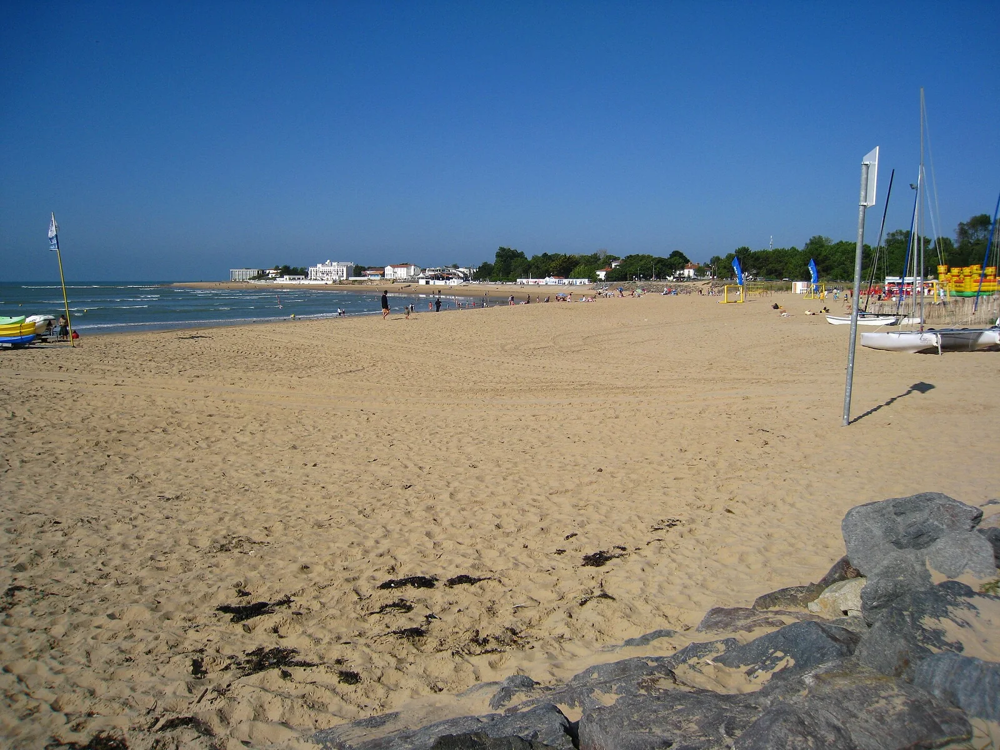

La Tranche-sur-Mer
Vendée, France · surf

Plage familiale aux vagues douces, parfaite pour apprendre. Eau souvent calme et écoles de surf à proximité.
- Lieu
- Vendée, France
- Niveau
- Débutant
- Activités
- surf
- Type d'eau
- Mer / océan
- Coordonnées
- 46.34, -1.43 (position approximative du secteur)
Dangers à connaître
- Plage fréquentée l'été.
- Quelques courants par endroits.
Le conseil d'Ocean Buddy
Top pour débuter 🐙 ! Reste dans les zones surveillées et profite des petites vagues.
Ouvrir dans Ocean Buddy Télécharger sur l'App Store
Source : Description historique Ocean Buddy · vérification externe en attente.